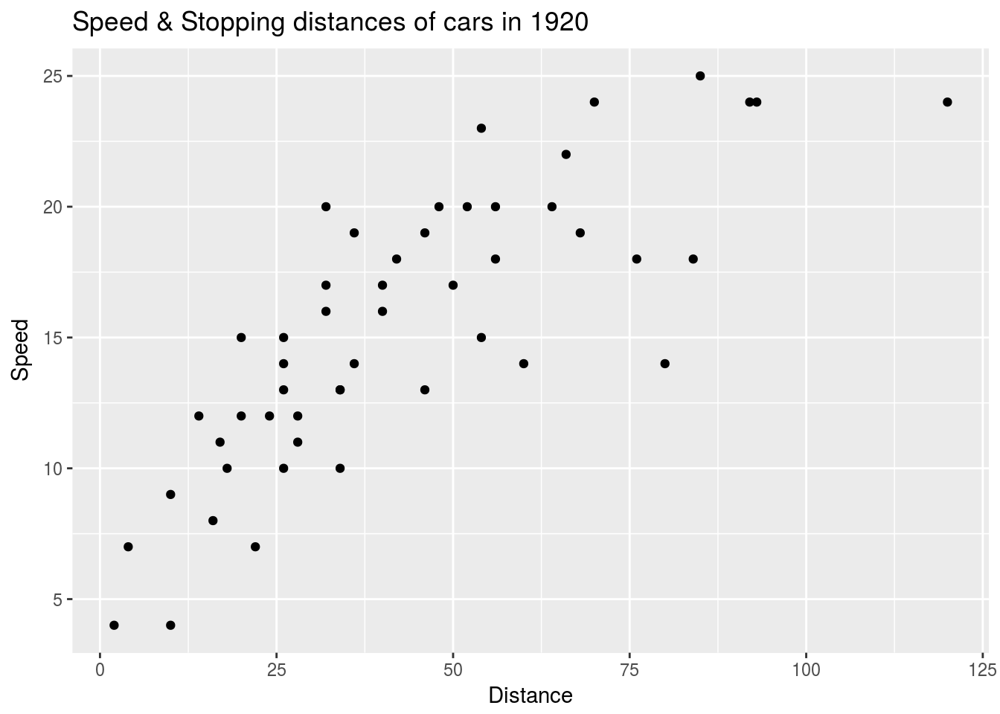
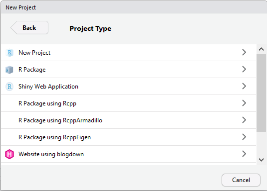

So I’ve upgraded from the old and outdated ad-riddled wordpress, up to a nice hugo website generated by blogdown, an R package developed by Yihui Xie. You can have a look at my old wordpress here. In my opinion the new blog is a huge improvement and much more efficient too. Here I’ll give some of the basics on how to get started on making a similar one.
So why did I update? I always intended to do blog posts on data analysis methods and R programming as that’s one of my main interests. Blogdown is hugely advantageous for this kind of thing. For example if I wanted to plot something in R then put it on my wordpress I’d have to plot it in R, save it with an appropriate size, find it in my folder and upload it to wordpress. R Markdown (Rmd) it’s simply:
```r
library(ggplot2)
qplot(cars$dist, cars$speed, xlab="Distance", ylab="Speed", main="Speed & Stopping distances of cars in 1920")
```
which results in (with eval=TRUE):

I know this doesn’t seem like much of a big difference but, when you’re doing it for 5+ plots and, you decide you want to change something in a plot the Rmd way is much nicer. On top of that Rmd makes adding in equations for more technical blog posts a breeze, you can literally copy and paste over LaTeX code.
In order to use blogdown you first need to learn R markdown, it’s extremely easy to learn especially if you’re already familiar with LaTeX or html, just have a look at (2). R markdown takes some easy to write code called markdown (extremely clean compared to HTML), with blocks of r code. It then parses the document using knitr and runs your R code then outputs a document just like the webpage you’re currently reading. The original reason I learned it was for handing in labs for courses, was much easier than copying plots over to word/LaTeX.
Blogdown
Blogdown is slightly more complicated however once you get everything setup it’s a breeze. To start I’d advise the following:
- The latest version of R Studio, I have version 1.1.41, if you’re later than that it’s probably fine. You can still work on the older version as long as your version of R is compatible. However the newer versions of R Studio have nice features for blogdown, like auto-template set up button rather than you needing to remember the line of code and, auto updating the website every time you save your R markdown file.
- A compatible version of R, so it actually works with the current version of blogdown. run “install.packages(“blogdown”)” to test this and restart R studio after.
Now open up your R Studio and make a new project from here you select “new directory” then you should see this:  Select “Website with blogdown”, if you don’t see this option you probably skipped one of the requirements listed above. After fill in the boxes as usual. I recommend the following:
You can change the template to whatever you like, here’s a few of the options:
- Recommended Themes by Yihui These ones will have the best support with blogdown.
- List of Hugo Themes Casper is the one I use for this blog. They may require some tweaking to get working well (i.e. I had to add Mathjax manually to process equations).
Once you found your theme change “yihui/hugo-lithium-theme” to “Github_Username/Github_Repo” and then R will generate an empty webpage with a few example posts. From here all you’ve got to do is go into the “Addins” option in R Studio click on new post and fill in the options as such:
All the boxes are fairly self explanatory, the only one I’d say is slightly different is the “post/\$Title_of_Blog_post” This is where the file will be created in your actual project folder. I recommend leaving this as the default as the template you chose relies on this. A possible use for changing this would be if you wanted to make a private post, which doesn’t show up on your home page that you could just send a direct link to. When you click Done it’ll open up a Rmd file for you to fill in. When happy with your post head back to “Addins” and press serve site. Voila, your website should be updated with your first post.
How it works
In your actual project folder you’ll have 4 main sub directories/files you may need to work with, I’ll give a quick summary on what they are here, if you want more detailed information just find the relevant section in (1).
public: This is the actual product of blogdown, you can take all the contents of this folder and put them onto a website server and it will put your website online. i.e. when I push this folder to my github this blog will update.
content: When you create a blog post this is where all the .Rmd files will be contained. When you press serve site, blogdown goes through this folder and compiles all you .Rmd documents into html and puts the finished webpage into public. If you’d like to delete a post you find the .Rmd document in content then delete it.Most of your posts should be in “content/post/”.
static: very similar to content however the contents of static are simply copied straight over to public. If I have an image at “static/blog/img/cat.png”, it’ll be copied into “public/blog/img/cat.png” when I serve_site. The main use for static is images for your Rmd files. Be careful what you put in here if you’ve limited server memory.
theme: Contains templates regarding the theme you selected for your website, mostly .html, .css and .js files. Playing with this one can break your website and a lot of the templates contain some strange code you don’t usually due to some options we put in the config file. The two changes you may need to make if you chose one of the less supported themes is:
- Adding in some code into “layouts/partials/header.html” to allow a javascript file called mathjax. This enables Rmd to use LaTeX code.
- Altering default.md if you have trouble with your “add post” template.
config.toml: This is where pretty much all of your site customization occurs. Adding an email button, links to your menu, logos, google analytics and more. It takes these options then edits the templates up in the theme directory to make the website that you tell it to. It’s fairly easy to figure out but the best place to find out what options your template offers, is to just head over the github page for your template, the default config.toml file will be printed out there.
This isn’t even a fraction of what blogdown can do but hopefully it’ll help you get you off of that awful wordpress. If you have any questions on how to get setup just send me an email, I probably ran into them too. I’m still no expert on blogdown but I plan on moving my full website over once I manage to build my own template. The next step for improving your website would be giving (1) a read. It gives a much more in-depth view at what blogdown can do..
I linked Yihui Xie’s webpage below (3), he makes some really cool packages (blogdown being one of them) and his name comes up frequently in the R programming world.
Disclaimer:
By no means am I an expert I’m just summarizing some of the troubles I had.
Just a final tip, if encoutering frequent R studio freezes, I highly recommend going into tools>project options> build tools> untick re-knit after supporting files change.
(2) R markdown Intro
(3) Yihui Xie